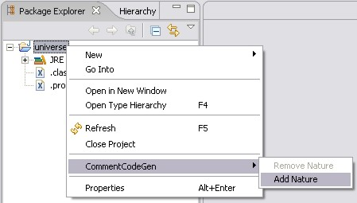

|  |
Start eclipse and right click onto a project you want to enable commentcodegen for and
select CommentCodeGen >Add Nature . |
/* * [c]<element attribute="value" />[/c] */or
/* * [c]<element attribute="value">[/c] * [c]<innerElement />[/c] * [c]</element>[/c] */The blocks [c][/c] of a comment are merged - this is to allow comment formatting. May be future versions are more intellegent in parsing comments and their formattings.
$Id: GettingStarted.html,v 1.1 2005-10-06 21:33:35 a-pi Exp $